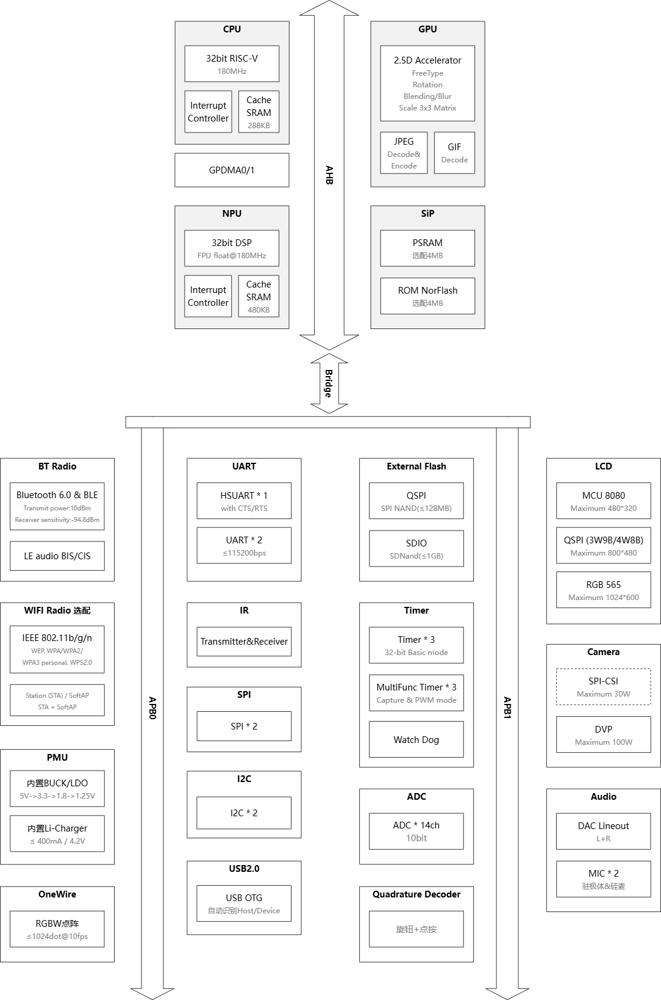

Chip architecture and memory
X1 integrates CPU, NPU, 2.5D GPU, on-chip storage, wireless connectivity, and commonly used peripherals on a single platform. Application code accesses peripherals through the AHB/APB bus, and graphics, audio, vision, and communication tasks can be divided according to load to the corresponding hardware units.
Key Architecture Points
32-bit RISC-V CPU, up to 180 MHz, with supporting interrupt controller and 288 KB Cache SRAM.
NPU/DSP operating frequency up to 180 MHz, designed for local inference and signal processing.
2.5D GPU supports rotation, scaling, blending, blurring, and matrix transformations, and integrates JPEG/GIF encoding and decoding capabilities.
Optional on-chip PSRAM/NOR Flash; external storage can be expanded via QSPI or SDIO.

Memory Partition

Flash areas that need to be erased must have their start addresses and lengths planned on 4 KB boundaries. The linker script divides code into two execution regions, .com and .bank, which differ in real-time performance and capacity:
Region |
Execution Method |
Applicable Scenarios |
|---|---|---|
|
Copied from ROM to resident RAM at startup, smaller capacity, stable access latency |
High real-time paths such as interrupt service, display scanning, and critical bus timing |
|
Dynamically loaded from ROM to Bank RAM as needed, larger capacity but with loading overhead |
General business logic, low-frequency control flow, and non-real-time functions |
Placing Real-Time Functions
Use the AT attribute to place interrupt or critical functions into .com_text. Segment names should remain unique and express the module’s affiliation:
AT(.com_text.app_timer)
void app_timer_isr(void)
{
gui_scan();
}
Functions not explicitly declared as AT default to the Bank area. After adjusting placement strategy, check the linker mapping file to ensure that the total for .com does not exceed the target chip’s RAM budget.
Strings in Interrupts
String constants may also default to the Bank area. If printing in an interrupt path is required, the format string should be placed in the resident area; it is recommended to write data to a lock-free buffer and output asynchronously through normal tasks to reduce interrupt occupancy time.
AT(.com_text.app_timer_str)
static const char timer_value_fmt[] = "timer value = %u\n";
AT(.com_text.app_timer)
void app_timer_isr(void)
{
printf(timer_value_fmt, timer_value);
}
Warning
printf itself may introduce locks, formatting, and UART waiting. Production code should not print directly in high-frequency interrupts; the example is only to illustrate that code and constants need to be in the same executable memory domain.